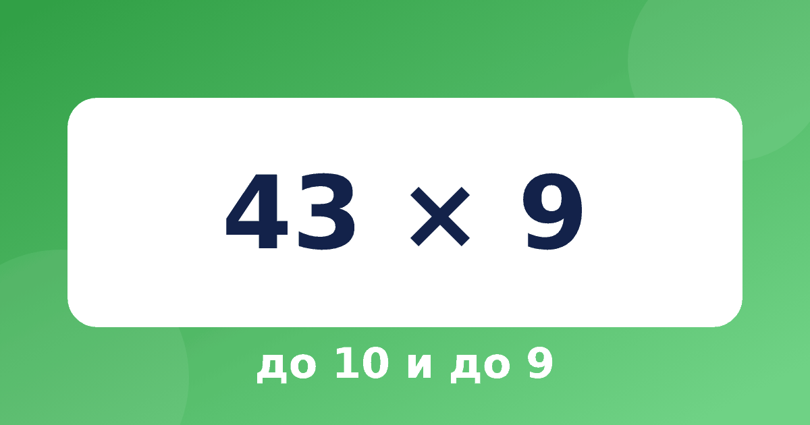

Умножение на 9 и на 8 без таблицы: правила «до 10» и «до 9»

Правила Трахтенберга для 9, 8, 4 и 3 выглядят сложнее, чем для 11 или 5, потому что здесь появляются слова «до 10» и «до 9». Но идея очень простая: мы заменяем умножение вычитанием. Разберём 9 и 8 подробно, а 4 и 3 покажем коротко. Умножение на 9 в уме и умножение на 8 в уме строятся на двух простых понятиях: до 10 и до 9.
Что значит «до 10» и «до 9»
«До 10» для цифры 3 — это 7, потому что 10 − 3 = 7. «До 9» для цифры 3 — это 6, потому что 9 − 3 = 6. Дети, которые знают дополнение до 10, справляются с этим сразу. Если пары до 10 ещё не отскакивают от зубов, лучше потренировать их заранее.
Умножение на 9
Ставим нулик слева и считаем справа налево, причём правила разные для трёх позиций:
- первая цифра справа: «до 10»;
- любая средняя цифра: «до 9» плюс сосед;
- нулик слева: сосед минус 1.
Пример: 43 × 9. Число с нуликами: 0 4 3 0.
- Цифра 3, сосед 0: 7 (10 − 3). Пишем 7.
- Цифра 4, сосед 3: 5 + 3 = 8 (9 − 4, сосед 3). Пишем 8.
- Нулик слева, сосед 4: 3 (сосед 4 − 1). Пишем 3.
Ответ 387.
Пример с переносом: 387 × 9.
- Цифра 7, сосед 0: 3 (10 − 7). Пишем 3.
- Цифра 8, сосед 7: 1 + 7 = 8 (9 − 8, сосед 7). Пишем 8.
- Цифра 3, сосед 8: 6 + 8 = 14 (9 − 3, сосед 8). Пишем 4, 1 запоминаем.
- Нулик слева, сосед 3: 2 + 1 = 3 (сосед 3 − 1, перенос 1). Пишем 3.
Ответ 3483.
Умножение на 8
Правила почти те же, но всё удваивается: первая цифра справа — «до 10», умноженное на 2; средние — «до 9», умноженное на 2, плюс сосед; нулик слева — сосед минус 2. Пример: 32 × 8.
- Цифра 2, сосед 0: 16 ((10 − 2) × 2). Пишем 6, 1 запоминаем.
- Цифра 3, сосед 2: 12 + 2 + 1 = 15 ((9 − 3) × 2, сосед 2, перенос 1). Пишем 5, 1 запоминаем.
- Нулик слева, сосед 3: 1 + 1 = 2 (сосед 3 − 2, перенос 1). Пишем 2.
Ответ 256.
Пример: 574 × 8.
- Цифра 4, сосед 0: 12 ((10 − 4) × 2). Пишем 2, 1 запоминаем.
- Цифра 7, сосед 4: 4 + 4 + 1 = 9 ((9 − 7) × 2, сосед 4, перенос 1). Пишем 9.
- Цифра 5, сосед 7: 8 + 7 = 15 ((9 − 5) × 2, сосед 7). Пишем 5, 1 запоминаем.
- Нулик слева, сосед 5: 3 + 1 = 4 (сосед 5 − 2, перенос 1). Пишем 4.
Ответ 4592.
Почему это работает
Потому что 9 = 10 − 1, а 8 = 10 − 2. Число × 9 = число × 10 − число. Вычитание в столбик удобно заменять на «до 10» и «до 9», отсюда и странные на первый взгляд правила. Проверим: 43 × 10 = 430, 430 − 43 = 387.
Коротко про 4 и 3
Для умножения на 4 первая цифра справа считается «до 10» (плюс 5, если она нечётная), средние цифры — «до 9» плюс половина соседа (плюс 5, если цифра нечётная), а нулик слева — половина соседа минус 1. Пример: 32 × 4. Цифра 2 даёт 10 − 2 = 8; цифра 3 даёт 9 − 3 = 6, плюс половина соседа 2, то есть 1, плюс 5 за нечётную цифру: 12, пишем 2, 1 запоминаем; нулик даёт половину от 3, то есть 1, минус 1, плюс перенос 1, и это 1. Ответ 128.
Для умножения на 3 правило похожее, но с удвоением. Пример: 54 × 3. Цифра 4: (10 − 4) × 2 = 12, пишем 2, 1 запоминаем. Цифра 5: (9 − 5) × 2 = 8, плюс половина соседа 2, плюс 5 за нечётную цифру, плюс перенос 1: 16, пишем 6, 1 запоминаем. Нулик: половина от 5 это 2, минус 2, плюс перенос 1: 1. Ответ 162.
Тренируемся
Закройте ответы, посчитайте по правилу и сверьтесь.
- 23 × 9 = 207
- 56 × 9 = 504
- 74 × 9 = 666
- 128 × 9 = 1152
- 24 × 8 = 192
- 45 × 8 = 360
- 67 × 8 = 536
Типичные ошибки
- Путают «до 10» и «до 9»: первая цифра справа всегда «до 10», остальные «до 9».
- Забывают сосед минус 1 (или 2) для нулика слева.
- Для 8 забывают удвоить результат «до 9».
Вопросы и ответы
Почему у первой цифры «до 10», а у остальных «до 9»?
Потому что вычитание «в столбик» начинается с десятки, а остальные разряды получают заём. Так объяснять детям проще: «первой цифре не хватает до десятки, остальным до девятки, потому что одну единицу мы уже занимаем».
Можно ли использовать правило для 9 при умножении на 99?
Нет, у 99 своё правило. Но умножение на 9 помогает понять приём «умножить на 10 и вычесть число», который работает для 9, 99 и 999.
Что важнее, 9 или 8?
Для начала девятка. Её правило короче, и оно открывает путь к остальным: 8, 4 и 3. Восьмёрку учите после того, как ребёнок уверенно справляется с девяткой.
Как учить
Начните с девятки, потому что она проще остальных, а потом переходите к восьмёрке. 4 и 3 оставьте на конец: там больше всего частей правила. В тренажёре «Быстрый счёт» все четыре правила разбиты на короткие модули, и ребёнок сам пишет цифры ответа по подсказкам.